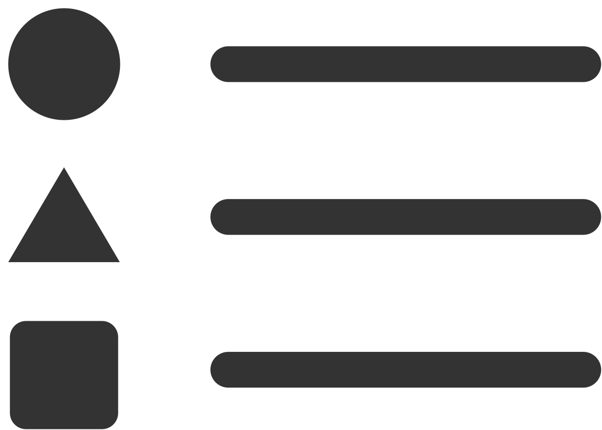

Watch Trend Pad
The Watch Trend pad shows the chronological value progression of selected variables. To open the window click on in the main menu bar.
By default it is positioned in the lower center.
Toolbar
The Watch Trend pad toolbar includes the following items:
|
Icon |
Function |
Description |
|---|---|---|
|
Watch |
Select variables |
Provides a list of the currently potential variables. Variables that are selected (checked) are added to the Watch Trend and can be observed |
|
 |
Legend On/Off |
Switches legend display on/off |
|
|
Zoom Time Out |
Expands the displayed time range |
|
|
Zoom Time In |
Shortens the displayed time range |
|
|
Unzoom |
Resets the displayed time range back to the default range |
|
|
Cursor On/Off |
Switches the cursor display on/off. The cursor shows the value of the curves at a given time |
|
|
Series Properties |
Opens a dialog to adjust the properties of the displayed trend series (Color, Pen Width, Font for the legend, etc.) |
|
|
Set start time and range |
Opens a dialog to set the displayed time range and to define the start time of the view. |

Configuring Watch Trend
As soon as you have selected the relevant points from the Watch drop down list, the trend series will be shown in the diagram. The list offers only those variables which are currently watched. If the list is empty you have to switch the desired variables into watch mode, after loading the project on a proper device. For testing purpose you can use Local Test Runtime. Refer to the HMI - User Guide topic Local Test Runtime.) The currently watched variables are also listed in the Watch pad.
If the currently shown view does not match the time range you need to check, use the dialog Set start time and range or shift it to the desired time range using the arrow buttons on the left and right lower edge of the diagram or use the real time panning by pushing the diagram in the relevant direction while holding down the right mouse key. Once the actual time is not longer visible in the diagram the view will not be updated continuously any longer and just the selected area is shown instead. To reset the view to the current point of time, click the Unzoom icon (if you have just shifted the view along the time axis and did not zoom in, click the Zoom time in icon  first).
first).